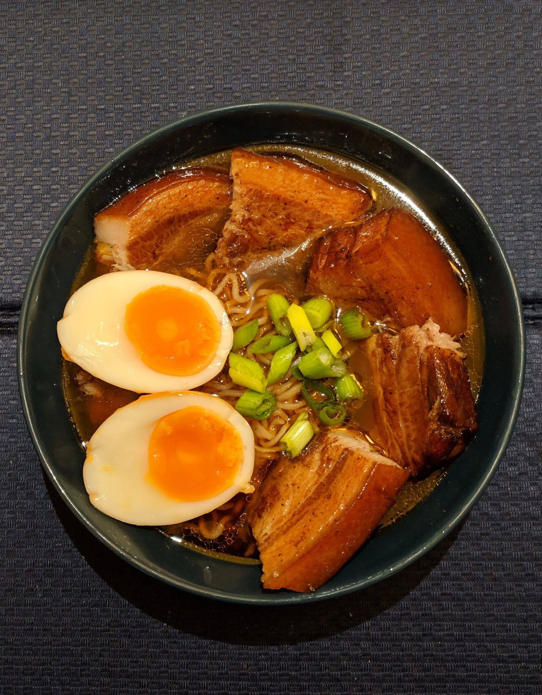

Tonkotsu Ramen

Description: bowl of ramen containing pork belly, ramen eggs, and vegetables garnished with spring onions
This recipe requires a lot of preparation, but the result will ruin restaurant ramen for you forever
Ingredience:
For the pork belly
- 3 strips pork belly
- 25ml soy sauce
- 1 tbsp crispy chilli oil
- 1 tsp sesame oil
- 10g sugar
for the broth
- 1 chicken stock pot
- 500ml boiling water
- 1 tbsp miso paste
- 4 spring onions
- 2 cloves garlic
- 1 lump of ginger
- ramen noodles
Everything else
- 4 eggs
- 2 heads of Pak Choi
- kimchi
Method:
prepare the eggs
- bring pot to a boil
- add eggs, lower heat to a simmer, cover and cook for 7 minutes
- remove eggs from pot and place in ice bath to prevent them cooking further
- in a bowl, add 500ml water and 100ml soy sauce
- peel eggs and place in soy sauce solution
- chill in fridge for minimum 2 hours
Prepare the pork belly
- Place the pork belly in a vacuum seal bag
- season with soy sauce, sugar, chilli oil and sesame oil
- vacuum seal bag and cook sous vide at 74 degrees and cook for 6 hours
Prepare the broth
- add all ingredients into a pot
- boil for 2 hours
- strain out large vegetables
Put it all together!
- boil the noodles in a separate pot
- once cooked, strain the noodles and drench in cold water
- chop pak choi into strips, separating the leaves
- boil pak choi in broth for 3 minutes, adding leaves after that time and boiling for additional 1 minute
- place cold noodles in a bowl
- cover with broth
- chop pork belly into thin slices and place in bowl
- place pak choi in bowl
- cut eggs in half and place 2 halves in bowl
- garnish with kimchi
- Enjoy!